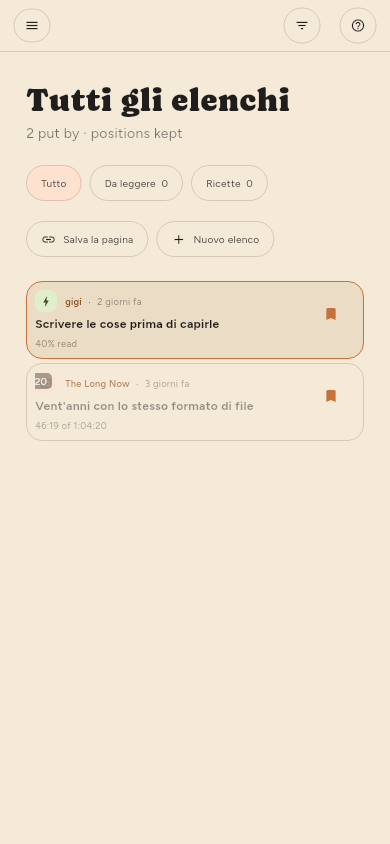

← Trovare le cose · Indice · Gestire le fonti →
Conservare le cose
Salva nel lettore, oppure s dall’elenco. Gli articoli salvati sono esclusi da qualsiasi operazione che libera spazio.
Elenchi (solo Premium)
Salvati è un elenco, e puoi crearne quanti altri vuoi: per argomento, per ciò che intendi farne, come preferisci archiviare. Si trovano nello scaffale a sinistra, sotto Elenchi, con quanto contiene ciascuno accanto al nome.

| Per | Fai |
|---|---|
| Crearne uno | + sull’intestazione Elenchi, oppure Nuovo elenco nel menu di salvataggio |
| Metterci qualcosa | Salva archivia nell’elenco mostrato pieno nello scaffale |
| Scegliere un altro elenco | Il ▾ accanto a Salva, un clic destro o una pressione prolungata |
| Toglierlo di nuovo | Di nuovo Salva, nell’elenco in cui è archiviato |
| Rinominarne o rimuoverne uno | Il suo ingranaggio nello scaffale, come per un feed |
Salva va nell’ultimo elenco che hai scelto. Scegliere un elenco dal menu archivia l’articolo e rende quell’elenco quello usato da allora in poi dal semplice salvataggio; lo scaffale indica quale riempiendo il suo segnalibro. Finché non scegli diversamente è Salvati, che è ciò che salvare ha sempre voluto dire.
Un articolo può stare in più elenchi contemporaneamente, e toglierlo da uno lascia stare gli altri. Salvati non si può rinominare né rimuovere: il semplice salvataggio deve avere un posto dove andare, e tutti i dispositivi concordano su quello.
Rimuovere un elenco lascia gli articoli che conteneva, purché un feed o un altro elenco li contenga ancora: la stessa regola della rimozione di un feed. Rimuovere una fonte lascia stare gli articoli salvati, e annota da dove venivano prima che la fonte sparisca.
Gli elenchi viaggiano fra i tuoi dispositivi, insieme agli articoli che contengono.